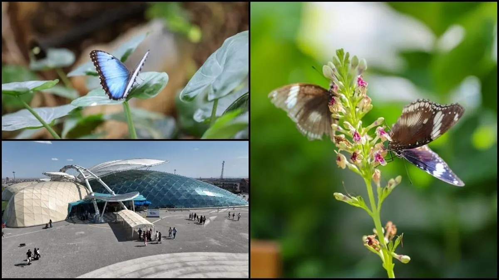

Konya Tropikal Kelebek Bahçesi, şehrimizin Selçuklu ilçesinde yer alan harika bir yerdir. Bahçenin binasına dışarıdan baktığında, kocaman bir kelebek şeklinde tasarlandığını hemen fark edersin. 🏛️🦋
İçeri girdiğinde ise seni tropikal bir hava karşılar. Kelebeklerin sağlıklı yaşayabilmesi ve uçabilmesi için içerideki sıcaklık, yaz kış demeden her zaman sabit 26 °C'de tutulur. 🌡️☀️
Burada kelebeklerin sevdiği binlerce çeşit bitki vardır ve onlara çok iyi bakılır. Ama dikkat! Bitkileri korurken kelebeklere zarar verebilecek kimyasal ilaçlar kesinlikle kullanılmaz. Bunun yerine, bitkilere zarar veren minik böcekleri yemeleri için uğur böcekleri gibi doğal yardımcılar kullanılır. Yani her şey doğaldır! 🐞🌿
Yukarıdaki bilgileri dikkatlice okuduysan, tuğlaların arkasındaki soruları kolayca cevaplayabilirsin!